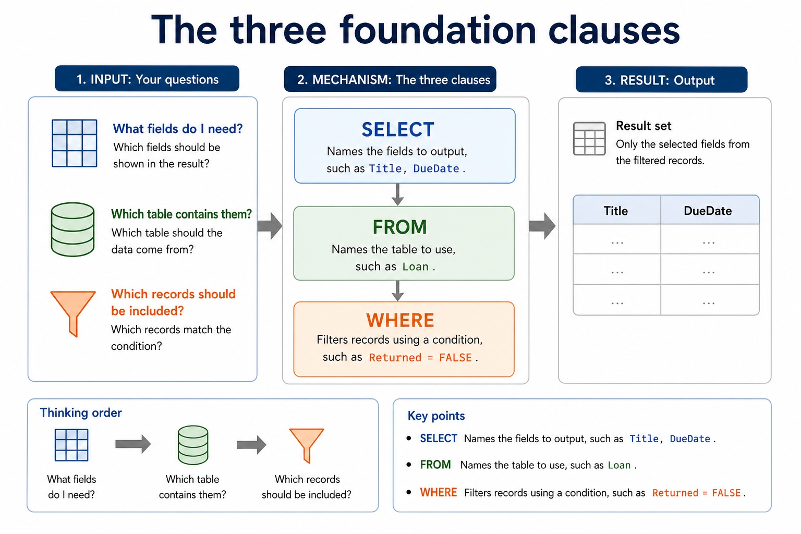

A given SQL statement and explain the semantics of its clauses, identifiers, operators and values
Structured Query Language (SQL) is the industry-standard language used by a DBMS for DDL and DML. To understand a statement, read each clause by its effect: SELECT chooses output fields, FROM identifies the source table, and WHERE filters records using a condition. Keywords, field names, table names, operators, literal values and punctuation have different roles.
A valid answer must preserve the requested semantics, not merely contain familiar keywords. Text and date values are normally quoted in this course's standard SQL style; numeric and Boolean values are not quoted. Clause order, comparison operators and requested output fields determine which records and columns appear.
A complete answer follows the scenario through design, statement and result. It does not claim that a primary key prevents every duplicate fact, that a secondary key must be unique, that normalisation guarantees correctness, or that a three-table/comma-style query is within the AS core boundary.
A query uses SELECT fields FROM a table, may filter rows with WHERE, sort with ORDER BY and form aggregate groups with GROUP BY. SUM totals values, COUNT counts rows or values, and AVG calculates a mean. An INNER JOIN uses ON to match at most two tables in the required AS queries.
Structure and relationships
SQL
Structured Query Language (SQL) is the industry-standard language used by a DBMS for DDL and DML. To understand a statement, read each clause by its effect: SELECT chooses output fields, FROM identifies the source table, and WHERE filters records using a condition. Keywords, field names, table names, operators, literal values and punctuation have different roles.
SELECT
Structured Query Language (SQL) is the industry-standard language used by a DBMS for DDL and DML. To understand a statement, read each clause by its effect: SELECT chooses output fields, FROM identifies the source table, and WHERE filters records using a condition. Keywords, field names, table names, operators, literal values and punctuation have different roles.
fields
Structured Query Language (SQL) is the industry-standard language used by a DBMS for DDL and DML. To understand a statement, read each clause by its effect: SELECT chooses output fields, FROM identifies the source table, and WHERE filters records using a condition. Keywords, field names, table names, operators, literal values and punctuation have different roles.
table
Structured Query Language (SQL) is the industry-standard language used by a DBMS for DDL and DML. To understand a statement, read each clause by its effect: SELECT chooses output fields, FROM identifies the source table, and WHERE filters records using a condition. Keywords, field names, table names, operators, literal values and punctuation have different roles.
condition
Structured Query Language (SQL) is the industry-standard language used by a DBMS for DDL and DML. To understand a statement, read each clause by its effect: SELECT chooses output fields, FROM identifies the source table, and WHERE filters records using a condition. Keywords, field names, table names, operators, literal values and punctuation have different roles.
FROM
Structured Query Language (SQL) is the industry-standard language used by a DBMS for DDL and DML. To understand a statement, read each clause by its effect: SELECT chooses output fields, FROM identifies the source table, and WHERE filters records using a condition. Keywords, field names, table names, operators, literal values and punctuation have different roles.
Worked example · A given SQL statement and explain the semantics of its clauses, identifiers, operators and values: complete worked route
- Identify the relevant condition or input
Structured Query Language (SQL) is the industry-standard language used by a DBMS for DDL and DML.
- Trace how the process works
To understand a statement, read each clause by its effect: SELECT chooses output fields, FROM identifies the source table, and WHERE filters records using a condition.
- Connect the mechanism to its result
Keywords, field names, table names, operators, literal values and punctuation have different roles.
- Complete example
Define two related tables / List overdue borrowers: CREATE DATABASE College; then CREATE TABLE Department and CREATE TABLE Student. ALTER TABLE can modify the structure later. SELECT Student.StudentName FROM Student INNER JOIN Loan ON Student.StudentID = Loan.StudentID WHERE Loan.DueDate < '2027-05-01'; uses two tables, one explicit join condition and one separate filter.
The three foundation clauses

- SELECT Names the fields to output, such as Title, DueDate .
- FROM Names the table to use, such as Loan .
- WHERE Filters records using a condition, such as Returned = FALSE .
- Thinking order:
- What fields do I need? Which table contains them? Which records should be included?
教师讲法 / 易错点
用“术语 → 机制/步骤 → 场景后果”检查 S8.08。先让学生读素材关系，再用英文完整表达；若只能复述名词，就回到 worked example 逐步追踪。